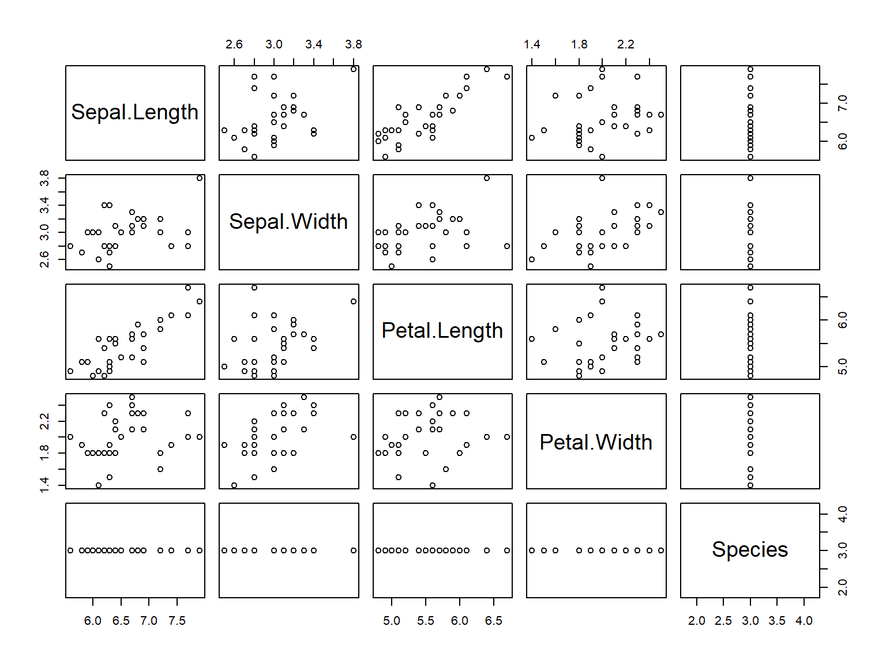

It isn’t one or the other
There’s plenty of ways for these two languages to interoperate and co-exist. Pick the right hammer for a given nail!
DataExplorer::create_report(iris)library(tidyverse)
library(rvest)
"https://en.wikipedia.org/wiki/List_of_superhero_debuts" %>%
read_html() %>%
html_nodes(xpath = "//*[@id='mw-content-text']/div/table") %>%
map(html_table, fill = TRUE) %>%
map_df( ~ mutate(., `Year Debuted` = as.character(`Year Debuted`))) %>%
mutate(`Char_Team` = coalesce(`Character / Team / Series`, `Character / Team`)) %>%
select(Char_Team, Year_Debut = `Year Debuted`) %>%
mutate(Year = str_extract(Year_Debut, "[0-9]{4}")) %>%
skimr::skim()## Skim summary statistics
## n obs: 376
## n variables: 3
##
## -- Variable type:character -----------------------------------------------------
## variable missing complete n min max empty n_unique
## Char_Team 0 376 376 0 92 1 376
## Year 1 375 376 4 4 0 92
## Year_Debut 1 375 376 4 38 0 248library(leaflet)
data(quakes)
# Show first 20 rows from the `quakes` dataset
leaflet(data = quakes[1:20, ]) %>% addTiles() %>% addMarkers(~long, ~lat, popup = ~as.character(mag),
label = ~as.character(mag))# Define a variable
a <- 25
# Call a variable
a## [1] 25# Do something to it
a + 1## [1] 26# Vector
a = c(25, 30)
# Matrix
matrix(a)## [,1]
## [1,] 25
## [2,] 30# Data frame
data.frame(a, b = a/5, c = LETTERS[1:2])## a b c
## 1 25 5 A
## 2 30 6 B# List
list(vector = a, matrix = matrix(a))## $vector
## [1] 25 30
##
## $matrix
## [,1]
## [1,] 25
## [2,] 30# Define a function
showAsPercent <- function(x) {
paste0(round(x * 100, 0), "%")
}
# Call a function
showAsPercent(0.1)## [1] "10%"# Get a package
install.packages("tibble")
# Activate a package
library(tibble)
# Use the package as a namespace
tibble::as.tibble(a)df <- data.frame(a = 1:10, b = LETTERS[1:5]) # setup
df[1:2, ] # row numbers## a b
## 1 1 A
## 2 2 Bdf[df$a < 2, ] # value filters## a b
## 1 1 Adf[df$a < 3, 1] # column filter## [1] 1 2df[df$a < 3, 1, drop = FALSE] # column filter (keep data.frame)## a
## 1 1
## 2 2# Orig OO (s3): cyclismo.org/tutorial/R/s3Classes.html
library(R6)
Loan <- R6Class("Loan", public = list(term = NA, initialize = function(term) {
if (!missing(term)) {
self$term <- term
}
}, extendBy = function(ext) {
self$term <- self$term + ext
}))acc <- Loan$new(36)
acc$extendBy(6)
acc$term## [1] 42library(magrittr)
iris %>% {
tail(., nrow(.)/5)
} %>% pairs()
library(tidyverse)
iris %>% filter(Petal.Width < 2) %>% group_by(Species) %>% summarise_all(mean)## # A tibble: 3 x 5
## Species Sepal.Length Sepal.Width Petal.Length Petal.Width
## <fct> <dbl> <dbl> <dbl> <dbl>
## 1 setosa 5.01 3.43 1.46 0.246
## 2 versicolor 5.94 2.77 4.26 1.33
## 3 virginica 6.34 2.79 5.32 1.76library() at the top of the script# ---- SectionName ---- to allow you to pick up the code into a LaTeX or markdown doc laterdata.table over dplyrDocument as you go!
# ---- SectionName ---- to save repetitionassertive, assertthat, testthat)ggplot2)github.com/lockedata/pRojects geni.us/rpkgs
devtools::install_github("lockedata/projects")
pRojects::createPackageProject()library(testthat)
context("Some thing I want to test")
test_that("things make sense", expect_equal(1, 1))library(covr)
`?`(package_coverage)
`?`(codecov)library(V8)
ct <- v8()
ct$eval("var foo = 123")
ct$eval("var bar = 456")
ct$eval("foo + bar")## [1] "579"ct$source(system.file("js/underscore.js", package = "V8"))
ct$call("_.filter", mtcars, JS("function(x){return x.mpg < 15}"))## mpg cyl disp hp drat wt qsec vs am gear carb
## Duster 360 14.3 8 360 245 3.21 3.570 15.84 0 0 3 4
## Cadillac Fleetwood 10.4 8 472 205 2.93 5.250 17.98 0 0 3 4
## Lincoln Continental 10.4 8 460 215 3.00 5.424 17.82 0 0 3 4
## Chrysler Imperial 14.7 8 440 230 3.23 5.345 17.42 0 0 3 4
## Camaro Z28 13.3 8 350 245 3.73 3.840 15.41 0 0 3 4library(reticulate)
main <- import_main()
builtins <- import_builtins()
builtins$print("foo")
py_run_string("x = 10")
# access the python main module via the 'py' object
py$x## [1] 10library(httr)
"https://foaas.com/version" %>% GET() %>% content()## $message
## [1] "Version 2.0.0"
##
## $subtitle
## [1] "FOAAS"rplumber.io
#' Echo the parameter that was sent in
#' @param msg The message to echo back.
#' @get /echo
function(msg = "") {
list(msg = paste0("The message is: '", msg, "'"))
}